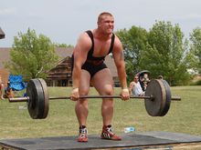
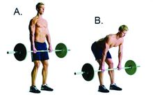

硬拉
硬拉是一种负重训练，主要分为屈腿硬拉（DeadLift）和直腿硬拉（Stiff-legged DeadLift），还有一些变种诸如罗马尼亚硬拉、相扑硬拉等，
屈腿硬拉主要用于锻炼下背部即竖脊肌，直腿硬拉主要锻炼股二头肌，但也涉及臀部肌群、竖脊肌。
传统意义上的硬拉是指屈腿硬拉，是世界力量举锦标赛的项目之一。

动作要领
提高腰部力量的练习动作中，硬拉（DeadLift）无疑是最有效的动作。
硬拉所用的是杠铃，曲柄和直柄杠铃都可以。传统硬拉即指屈腿硬拉，此外还有直腿硬拉，但屈腿硬拉锻炼重心更偏向于后腰竖脊肌。
动作要领：
1.双脚呈八字形站立，杠铃放体前，屈膝俯身，双手正握杠铃，握距约与肩宽或宽肩，头稍抬起，挺胸腰背绷紧，翘臀，上体前倾约45度。腿肌用力伸膝提铃，稍停。
然后屈膝缓慢下降还原。为提高锻炼效果，屈膝下降杠铃时不让其触及地面
2.拉到最高点时，双肩尽量外展，抬头挺胸，停滞3秒钟。还原，重复。
注意事项：
1.注意区别直腿硬拉和屈腿硬拉：屈腿硬拉是锻炼后腰的最好办法，直腿硬拉则主要锻炼大腿股二头肌。
2.动作平稳，提杠铃时不能含胸弓腰，抬头、腰背要绷紧，上体始终保持张紧状态，否则容易损伤腰椎；提拉杠铃至极限时腰背不要后仰，意念要始终在后背部。
3.身体重心问题是硬拉容易出现的错误，往往为省力把重心向后移，这样臀部和大腿后侧肌群就会参与更多的运动，分担腰部承受力，也就变成了练习腿部的动作。
所以一定要将重心移到腰部，身体稍向前探身，直到感觉腰部产生压力为止。
4.腿部幅度：腿部不要过于伸直或弯曲，过于伸直就只锻炼大腿后侧，过于弯曲，就成了蹲起，只会锻炼到腿部。具体弯曲程度没有特定标准，一般做到腿部稍屈，腰部感觉明显就可以了。
5.双脚距离：开始锻炼时双脚与髋同宽就可，随着训练水平提高，重量增加，双脚也可打开一点，这样能减少腰部的压力，做起更重的重量，刺激更深层的肌肉。
6.握法说明：过去许多健美运动员都采用一正一反的握法，现在倾向于双手正握，因为正握能更好地控制杠铃使身体平稳，而一正一反会引起杠铃转动，躯干也会跟着扭转，容易引起腰部损伤。
